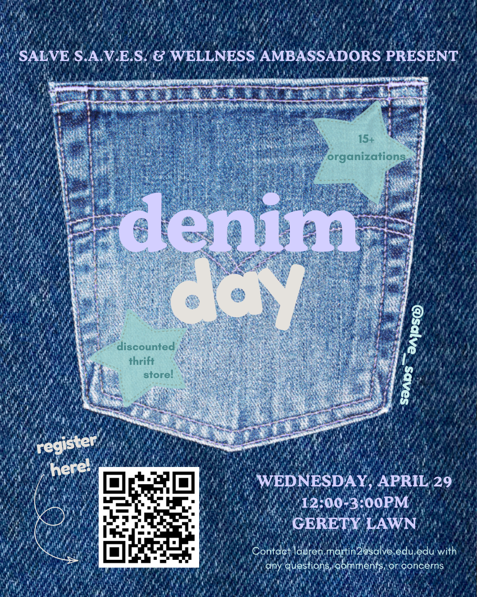
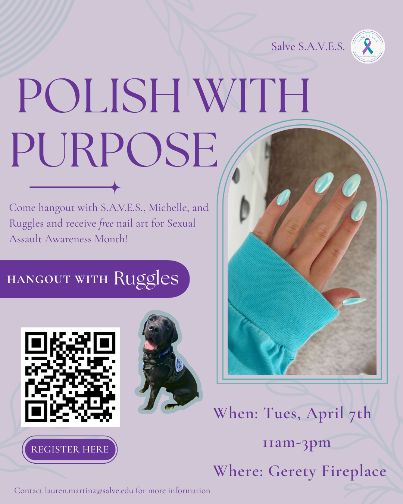
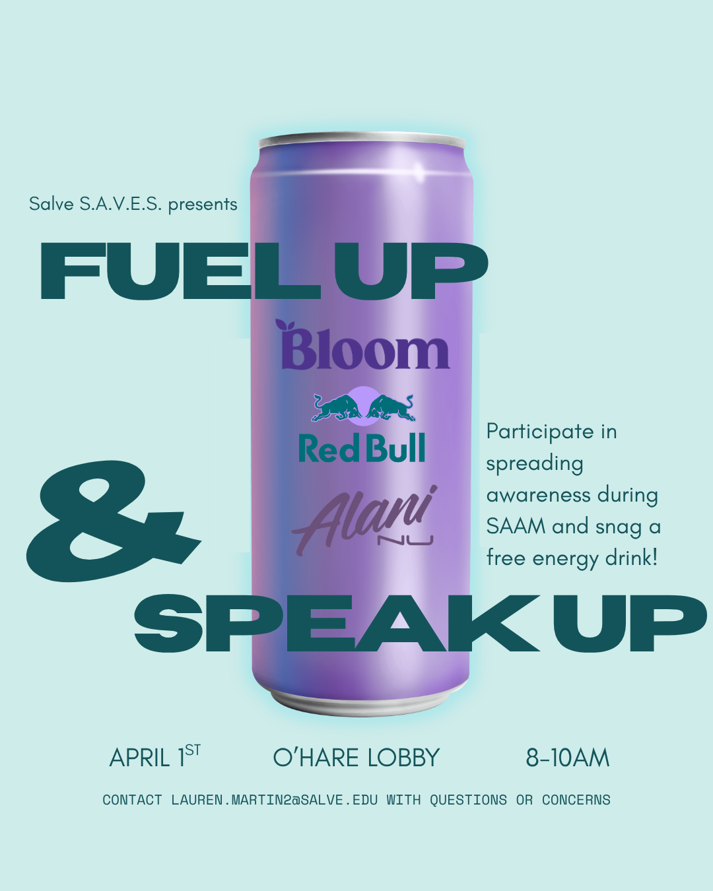
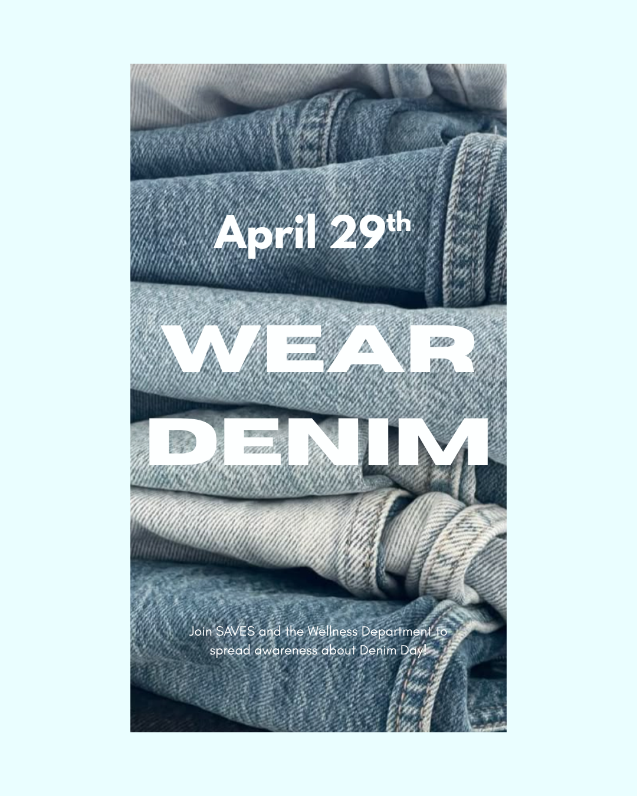

Nuala Pell Leadership Program Fellow
I analyze public policy through stakeholder mapping, wrote a policy brief on the Responsibility to Protect (R2P), and traveled to Washington, D.C., to meet with esteemed civil servants.
The programs and organizations I lead and take part in.
I analyze public policy through stakeholder mapping, wrote a policy brief on the Responsibility to Protect (R2P), and traveled to Washington, D.C., to meet with esteemed civil servants.
I led the effort to bring Model UN back to Salve Regina. I now work with the executive board to plan simulations, conferences, and roundtables on historical and current international issues.
As president, I organize Title IX awareness events and partner with local advocacy programs. As PR coordinator, I designed flyers and infographics and used Instagram and TikTok insights to plan our posts.




I helped pilot a civic engagement and media literacy program for eighth graders, wrote a survey for 120 students, and led four groups of 30 students through a mock school board meeting.
I worked with newportFILM to build a physical and digital archive of 16 years of its work, and I heard from Aquidneck Island leaders and Senator Whitehouse at a RENewport meeting.